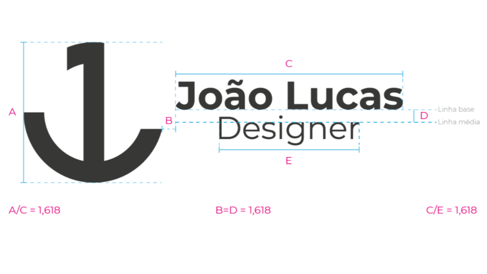

Sou João Lucas Oliveira, estudante de Comunicação Social Publicidade e Propaganda pela Estácio Unimeta - AC, e graduo também o último período em Marketing - Tecnólogo na Uniasselvi - AC
Minha paixão pelo design começou com apenas um simples trabalho escolar no fundamental, com a primeira ferramenta o Power Point aplicativo de apresentação da Microsoft, exposto até então por um primo. Após isso, comecei a buscar muito mais, a importãncia do design para uma marca, aplicada de forma correta faz com que a empresa cresça de maneira única, agregando valor e conectividade com seus clientes, não apenas vendas mas emoções geradas.
Portanto, como a função do profissional de designer é solucionar problemas através de projetos de comunicação visual, optei por escolher os nichos de criação de identidade visual e social media, áreas essas que me identifiquei bastante.
O conceito do símbolo foi pensado na junção das iniciais "JL" do nome João Lucas mais o ícone de âncora, que por sua vez, é utilizada para imobilizar um transporte flutuante, de maneira análoga a sua simbologia pode ser entendida como a estabilidade, segurança, firmeza, equilíbrio e força, valores esses que a marca deseja transmitir. Além disso, apresentar em um formato minimalista a união das ideias expostas.
Com o intuito de agregar mais profissionalismo e seriedade, foi aplicado a Sequência de Fibonacci para a criação da marca, auxiliando principalmente na harmonia e construção dos elementos.
É uma sucessão de números que, misteriosamente, aparece em muitos fenômenos da natureza.
O logo João Lucas Designer possui uma versão horizontal, que deve ser utilizada somente quando for inviável a aplicação vertical, no momento da diagramação.
A tipografia identifica e uniformiza os textos de peças de comunicação institucionais e promocionais da marca. Trata-se da família MONTSERRAT com todas as suas variações e pesos. A sua escolha foi baseada no pensamento que ela transmite modernidade, minimalismo e força, além de contribuir para facilidade de materiais impressos e em ambiente digital.
RGB: 60, 60, 59
CMYK: 0, 0, 90%
#3C3C3B
A escolha da cor preta para identidade visual, baseada na psicologia das cores, transmite a ideia de elegância, sofisticação e principalmente força.
RGB: 237, 237, 237
CMYK: 0, 0, 10%
#EDEDED
A variante da cor branca normalmente tem uma conotação positiva, está associada à segurança, pureza e reforçar novamente o conceito de elegância.